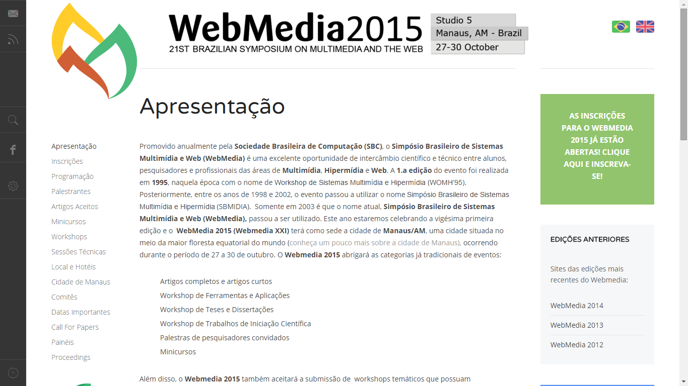
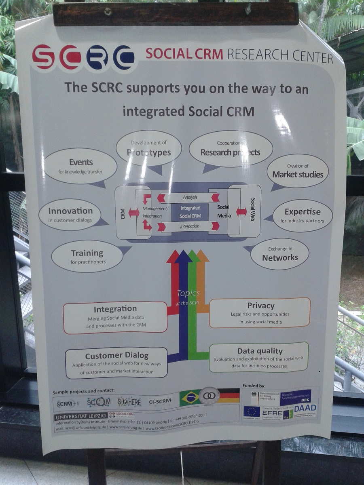

Webmedia 2015 foi um simpósio sobre multimídia e a web que ocorreu em Manaus nos dias 27 à 30 de outubro de 2015.
Estou usando esta postagem para anotar algumas palavras chaves que achei que podem ser úteis algum dia no futuro.
E, caso ainda esteja de pé, acesse o site do evento para ver mais detalhes: http://webmedia.icomp.ufam.edu.br/.
Sentiment Analysis
É a análise de sentimento de um texto em linguagem natural. Com técnicas de Sentiment Analysis, uma máquina pode dizer se um texto pode ser “positivo” ou “negativo”. Isso pode ser útil quando se esta avaliando uma grande quantidade de texto sobre um determinado tema que foi minerado das redes sociais.
Keywords úteis:
- Sentyment Analysis
- Twitter Sentiment Viz
- Amazon Mechanical Turk
- Crowdsourcing
- The quick brown fox jumps over the lazy dog
- Whisper
Educação
Também foram aborados algumas coisas sobre educação, como uma ferramenta para criação de conteúdo interativo e uma aplicação para transmissão de vídeo em grupo.
Keywords úteis:
Web
Qualquer coisa que envolva web. O evento contou com a ilustre participação do Demi Getschko, que é um dos pioneiros da internet no Brasil.
Keywords úteis:
- Simet
- Nic.br
- Publicações no cgi.br
- Lattes do Demi Getschko
- Twitter do Demi Getschko
- Email do Demi: demi@nick.com
- Amazon Startups - Empresa de belém
- Frameweb - Um framework para sistemas WIS
- Model Driven Development
- Suite Vlibras Plugin - Plugin para firefox que traduz texto em libras
- Software Público Brasileiro
- DBPedia - “Wikipedia estruturada”
- Ultragrid - Software para transmissão de video em alta qualidade
Social Customer Relationship Management
Este é o próximo passo do marketing digital. Social CRM é a garimpagem e análise dos dados para que decisões possam ser tomadas para realização de alguma ação. Tudo isso baseado nas redes sociais.
Keywords úteis:
- Social CRM
- Facebook da Universidade de Leipzig - eles são referência no Social CRM na Alemanha
- jacob@ufpa.br - email de um pesquisador que trabalha na pesquisa de Social CRM no Brasil
- E-dialog - Empresa de Juiz de Fora
- Link Brand - Empresa de São Paulo
- Eduardo Godoy de Lima - Fundador da Link Brand
- Digitalents - Empresa de São Paulo
- Sandra Turchi - Fundadora do Digitalents
- Omni-channel-management
- Social Searching
- Social Monitoring Media
- Innocentive - Plataforma de Crowdsourcing
- Utest - Plataforma de co-creation
- Social Commerce
- Unbounce.com - Construtor pago de landing pages
- Metodologia A.I.R.D - Criado pelo fundador da Link Brand
- Réguas de relacionamento - dito pelo fundador da Link Brand
- Conversation Prism in Social Media
- Socialmention
- Falcon Social - Gerênciamento de mídias sociais
- Radian 6 - Gerênciamento de mídias sociais
- Synthesio - Gerênciamento de mídias sociais e análise de dados
- Lithium - Gerênciamento de mídias sociais e análise de dados
- Financial Computing
- Observatório do Investimento - Plataforma que faz uso de redes sociais para apontar tendencias no mercado de finanças
Planejamento de estratégia de marketing digital
- Definir Objetivos
- Persona da marca
- Tipo de conteúdo
- Plataformas que serão usadas
- Recursos
- Métricas e monitoramento
Social Media Key Performance Indicators (KPIs)
Reach
- Fans ans followers
- Demographics
- Subscribers
- Pageviews/traffic
Engagement
- Likes
- Comments
- Mentions
- Sentiment
Amplification
- Shares
- Retweets
Influence (pessoas que são influenciadoras)
- Share of conversation
- Net Promoters
- Satisfaction
- Brand Evangelists
Modelo de Social CRM

Computação Humanitária
Tudo que envolve a computação para ajudar a evitar mortes e desastres com pessoas se encaixa na parte de computação humanitária.
Keyword úteis:
- Humanitarian Computing
- Verily - Plataforma de crowdsource para coleta de dados de crisis ao redor do mundo
- Big Crisis Data - Banco de dados com crises que ocorreram ao redor do mundo
- Apache Spark - Motor para processamento de dados em grande escala
- Elastic Search - Empresa que ajuda na análise de dados em redes sociais, podendo ser relacionado à crises humanitárias